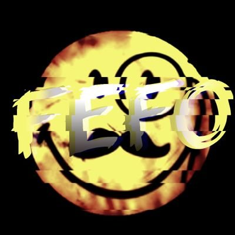

Zum Kanal:

Im Folgenden erfahrt ihr etwas über mich und meinen Kanal FeFo Hi, ich bins, Felix. Hier ist mein Steckbrief (richtiger Kindergartensteckbrief xD): Name: Felix Geburtstag: 17.12. Wohnort: Im Kreis Düren ;) Meine Hobbies: Gitarre spielen, PC spielen, Musik hören, Informatik Das mag ich: Mit Freunden treffen, Overwatch, Busse ;), "arbeiten" am PC, Ferien Das mag ich nicht: Arroganz u./o. selbstverliebte Menschen, "Boomer", Mero, Hausaufgaben, Lügen, Fortnite FeFo, der Name meines YouTube Kanals.
Könnt gerne mal überall Follow da lassen. DANKE
Inhaltsverzeichnis:
Inhalte und was ihr von mir erwarten könnt
Über mich
Über den Kanal (die "Kunst"figur)
Social Media
Inhalte und was ihr von mir erwarten könnt:
Inhalte auf dem Kanal:
Was ihr erwarten könnt:
Über mich:
Über den Kanal FeFo:
Gegründet wurde er am 22.7.2017 und seit dem machte ich Videos die ich mit dem Handy aufgenommen und geschnitten habe. Wie man
an dem Handy-Ding erkennen kann, waren diese Videos qualitativ nicht wirklich hochwertig. Mittlerweile mache ich
Streams vom PC und streame zum Beispiel Overwatch oder Omsi 2: Der Omnbibussimulator. Außerdem gibt es gelegentlich
Reaction- oder Quatschstreams. An der Qualität kann man immer noch arbeiten, es gibt auch noch genug
Stellen, an denen ich nicht rede, ich versuche aber, mich stetig zu verbessern, in Richtung Qualität UND
Unterhaltsamkeit. Bis dahin würde ich mich immer über Unterstützung und viele Nachrichten im Chat freuen, da
dies auch dazu führt, dass ich mehr rede.
Social Media:
YouTube
Twitch
Instagram
Twitter
nach oben